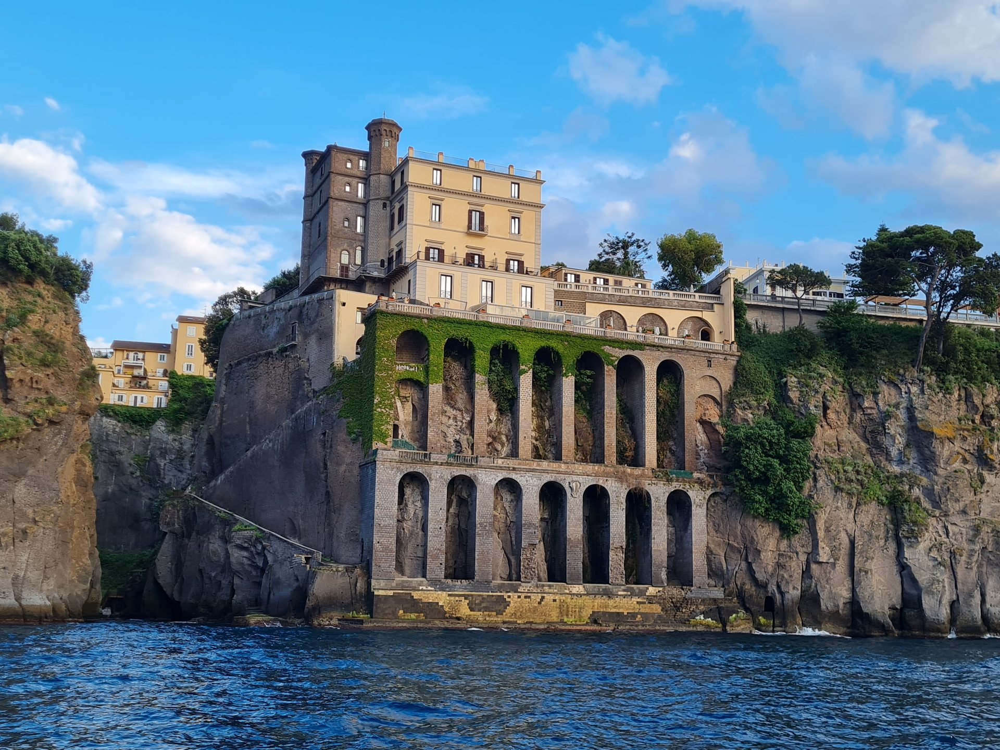
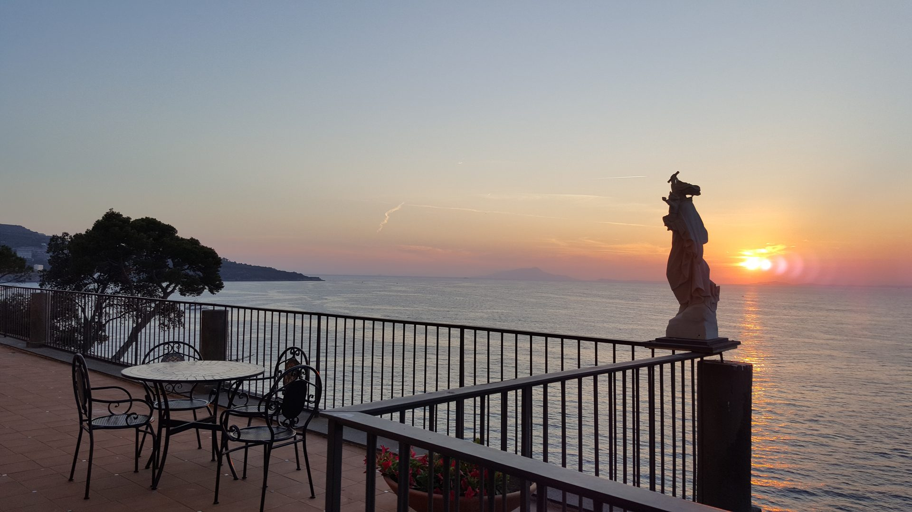
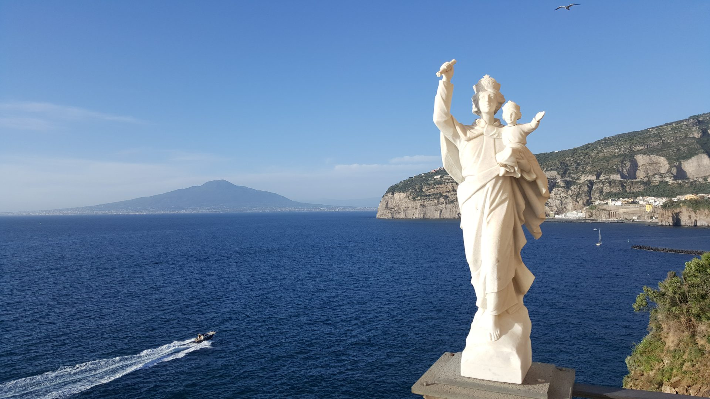

Tavola I · la villa dal mare
La casa dello scrittore
Un resort storico 4 stelle affacciato sul Golfo di Napoli, nella dimora che fu di Francis Marion Crawford.
A picco sul golfo, a un passo da Piazza Tasso
A pochi passi dal centro di Sorrento, tra il profumo degli agrumeti e la vista sul Vesuvio, Villa Crawford unisce l’eleganza di una dimora storica all’ospitalità di un resort contemporaneo.
La proprietà scende verso il mare per terrazzamenti e archi scavati nel tufo: è la stessa scogliera che lo scrittore descriveva nelle sue lettere, e che oggi si attraversa per arrivare all’acqua.
4stelle 18camere 48posti letto 3piani con ascensore 1,5km da Piazza Tasso

Tavola II · la terrazza, all’ora del tramonto
La giornata, dall’alba alla sera
Si comincia in terrazza, dove il golfo si apre fino al Vesuvio e la colazione dura quanto serve. Nel pomeriggio la scogliera e il giardino di agrumi; al tramonto si torna su, per l’aperitivo, quando la luce cade dietro il promontorio.
La sera la villa si illumina dal basso e la torre in tufo diventa il punto di riferimento da tutta la baia.

Tavola III · il Vesuvio, dal parapetto
Diciotto camere, nessuna con la stessa vista
Sono distribuite su tre piani. Cambiano metratura e affaccio: giardino di agrumi, golfo aperto, o la scogliera sotto la terrazza.
Tavola IV · la torre in tufo, di sera
Tre modi di fermarsi
Corso Marion Crawford, Sant’Agnello
La villa si trova sulla strada che porta il nome dello scrittore, fra Sant’Agnello e Sorrento. Si arriva a piedi dal centro in una ventina di minuti, in auto in cinque.
1,5km da Piazza Tasso 48km da Napoli Capodichino 900m dalla Circumvesuviana